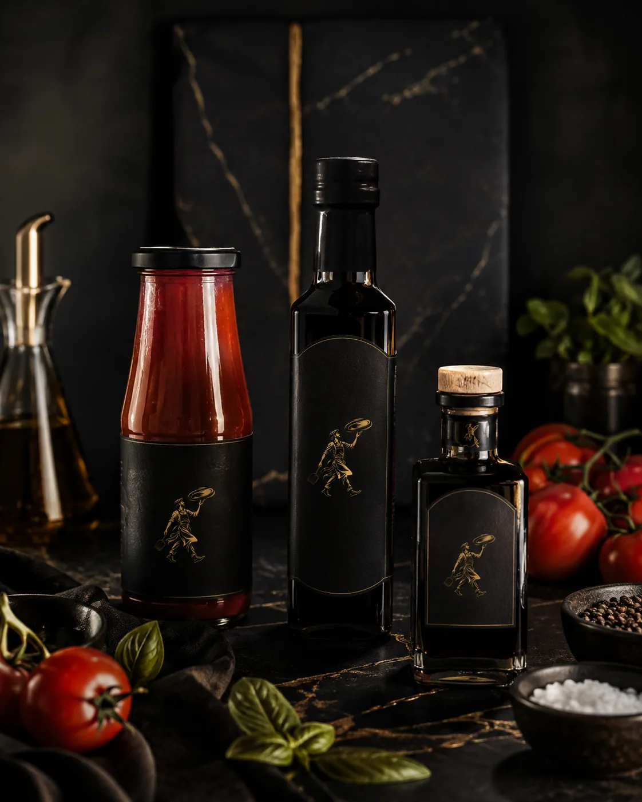

Tienda El Errante
Entra al proceso
donde quieras.
Haz la masa, personaliza una base, termina una pizza completa o lleva un acabado de nuestra despensa.
Distintos niveles de participación. La misma exigencia sobre el producto.
Cuatro maneras de entrar
Elige qué parte quieres hacer tú.
La diferencia no es una jerarquía de calidad. Es cuánto del recorrido quieres asumir antes del último bocado.
Pizzas En Casa
Recetas completas construidas para recibir un Segundo Fuego doméstico.
Elegir una pizzaCatálogo
Once referencias.
Una razón para cada una.
La ficha contiene presentación, perfil, terminado y condiciones vigentes. Para conservación, alérgenos, vida útil y lote, manda siempre la etiqueta real.
En Casa · Segundo Fuego
No la recalientas.
La terminas.
La primera cocción construye parte de la estructura. El último fuego ocurre en tu horno y completa la pizza.
La ficha y la etiqueta vigente mandan para preparación, conservación, alérgenos, vida útil y lote.

Despensa
El acabado también necesita una función.
Tomate y reducciones trabajan acidez, concentración, dulzor o contraste. No están para cubrir una preparación que ya funciona.
Ver la despensaComprar con información
La fotografía abre el apetito.
La ficha aclara la compra.
Antes de confirmar, revisa los datos específicos de la referencia y el empaque vigente.
Unidades, peso o formato para saber exactamente qué llega.
Temperatura, cadena de frío o almacenamiento seco según la referencia.
Qué debes hacer y qué señales ayudan a reconocer el punto correcto.
Congelados y productos secos pueden usar rutas distintas; se confirma antes de preparar el pedido.